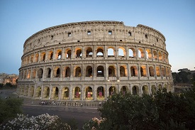
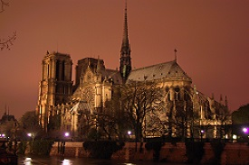
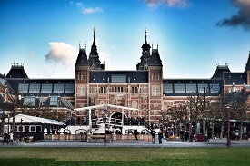

Explore a beleza e a riqueza cultural da Europa em nosso site dedicado aos pontos turísticos mais deslumbrantes do continente. De monumentos históricos a paisagens naturais deslumbrantes, nossa plataforma é o seu guia definitivo para descobrir as maravilhas que a Europa tem a oferecer. Navegue por informações detalhadas, fotos deslumbrantes e dicas de viagem para planejar a sua próxima aventura inesquecível pelo Velho Continente.
O Coliseu de Roma ou Anfiteatro Flaviano é um dos principais pontos turísticos da Itália e um dos monumentos mais famosos do mundo. Com uma construção que se iniciou no ano de 72 d.C e serviu como palco para gladiadores que lutavam entre si, ele atrai pelo menos 4 milhões de turistas todos os anos. O Coliseu de Roma tinha capacidade para 70 mil pessoas e oferecia espetáculos para distrair a população. Devido à quantidade de turistas que costumam visitar o local, recomendamos que garanta o seu ingresso para o Coliseu com antecedência e evite filas.
A Catedral de Notre Dame foi construída entre 1163 e 1245 e é uma das catedrais góticas mais antigas do mundo. Vários acontecimentos importantes foram realizados na Catedral de Notre Dame, como a coroação de Napoleão Bonaparte e de Henrique VI da Inglaterra, além da beatificação de Joana D’Arc. Em 15 de abril de 2019, ela sofreu um grave incêndio e, por causa disso, a Catedral ainda permanece fechada ao público para a finalização das obras de reconstrução.
O Museumplein ou Praça dos Museus é um ponto turístico que não pode ficar de fora da nossa lista. Os museus maiores e mais famosos de Amsterdã estão na Praça dos Museus, como Museu Rijksmuseum, Museu Van Gogh e Museu Stedelijk.
